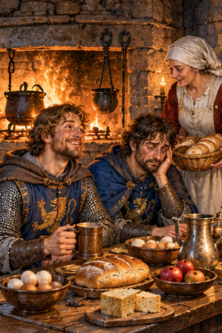
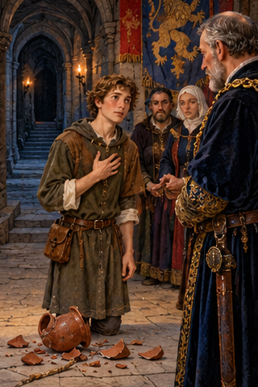
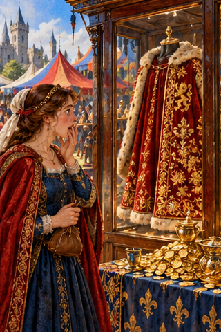
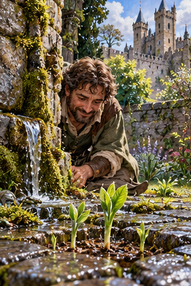
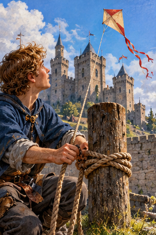
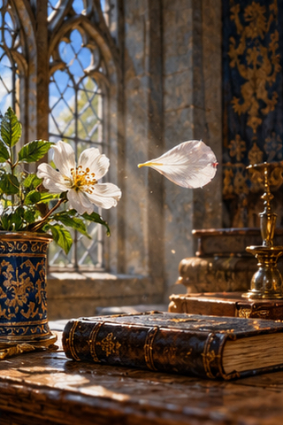
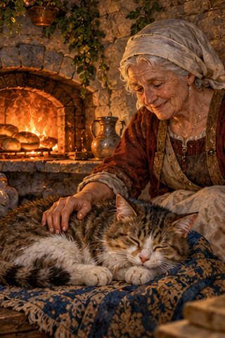

PDD Batch 25 — review only
Ten 320×480 portraits, in manifest order. Not installed.
Original composite
1. PDD 267 — Tener buena / mala cara
pdd267.jpg
2. PDD 268 — Dar la cara
pdd268.jpg3. PDD 269 — Tener cara
pdd269.jpg
4. PDD 270 — Costar un ojo de la cara
pdd270.jpg5. PDD 271 — irrumpir
pdd271.jpg
6. PDD 272 — brotar
pdd272.jpg
7. PDD 273 — desatar
pdd273.jpg
8. PDD 274 — pétalo
pdd274.jpg
9. PDD 275 — acariciar
pdd275.jpg10. PDD 276 — trémulo / trémula
pdd276.jpg